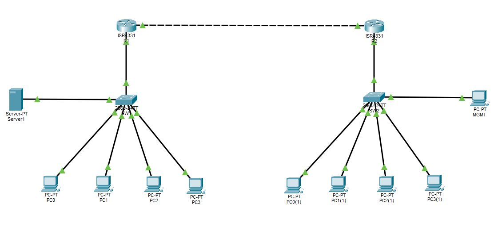
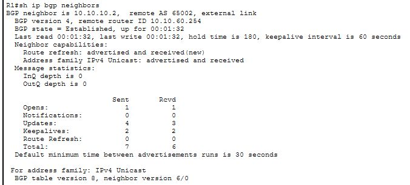
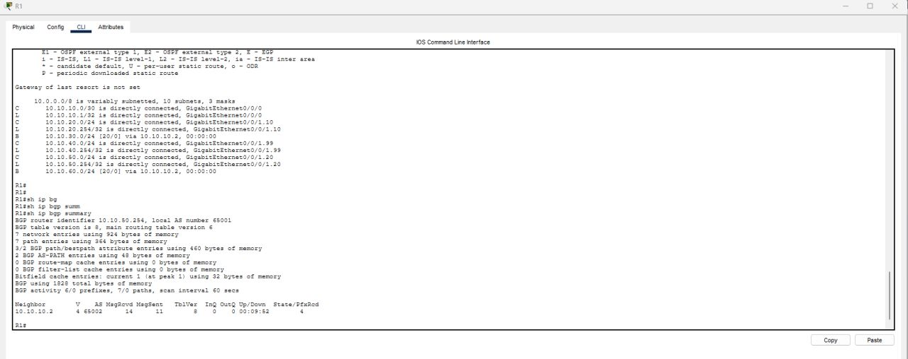
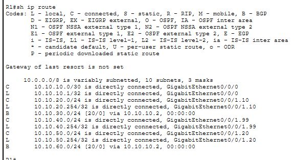
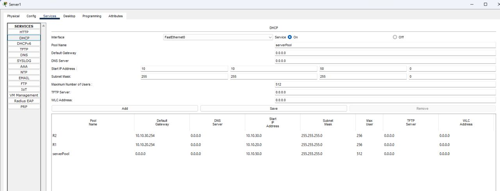
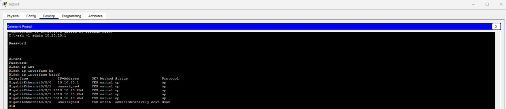
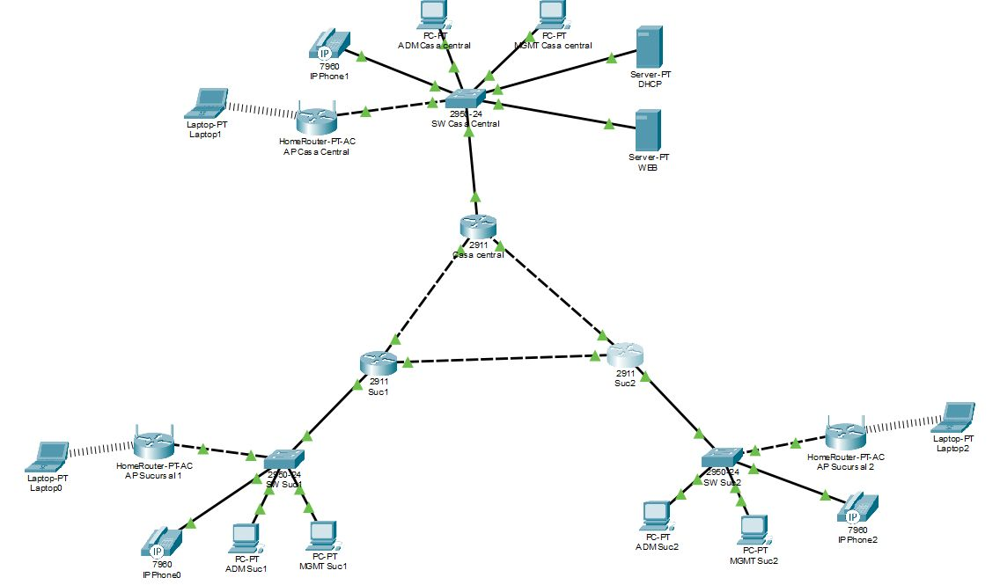
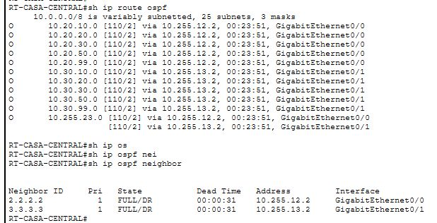
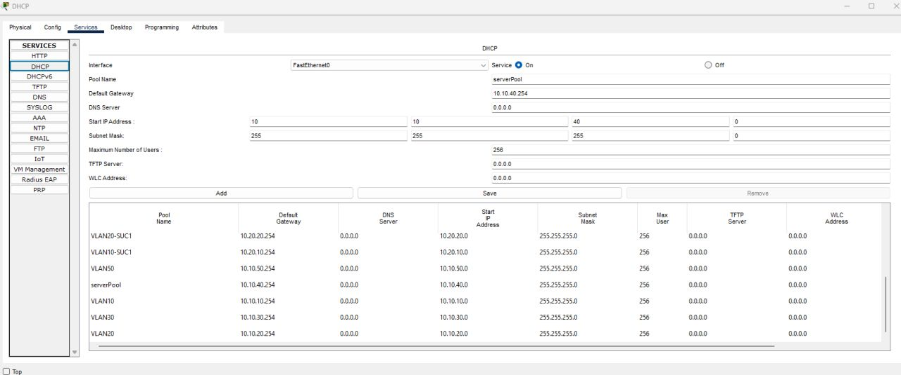
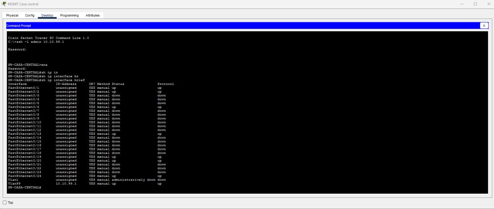

Técnico en redes y telecomunicaciones con experiencia en configuración de servicios empresariales, routing y switching, fibra óptica y transmisión. Trayectoria en operación, puesta en servicio, instalación y mantenimiento de infraestructura de red.
PORTFOLIO PROFESIONAL / NETWORKING
Javier Maximiliano
Torales
TÉCNICO EN REDES Y TELECOMUNICACIONES
Experiencia en infraestructura, conectividad y operación de redes.
01 / PERFIL
Perfil profesional
Redes y telecomunicaciones · Operación · Implementación
02 / TRAYECTORIA
Experiencia profesional
Trayectoria en operación, implementación y soporte de infraestructura de red.
IPLAN NSS S.A. — Operador de Service Configuration
- Configuración de servicios L2 y L3: Internet empresarial, enlaces punto a punto y QinQ; telefonía IP y SIP.
- Soporte técnico y seguimiento de servicios instalados.
- Equipamiento Cisco: ASR 9K, Nexus 7K, C1300, C9300, SG250, SF300, 3400, 3550, 3750, 3850 y Catalyst.
- Equipamiento Huawei: NE40, NEX4, S9303, AR651, S310, 6320, 6330 y S6730.
- Protocolos: BGP, OSPF, VPN, IPSec, GRE, ruteo estático, VRF, STP, LACP, PAgP, VTP, FTP, TFTP, LLDP, LDP, CDP, SNMP, ICMP y NTP.
- Redes y tecnologías: GPON y XGSPON con OLT ZTE y Huawei; MPLS, VPLS y EVPN; redes DWDM Cisco y Huawei; certificación de enlaces RFC 2544.
IPLAN NSS S.A. — Técnico de Instalaciones y Mantenimiento
2017 – 2021- Instalación y mantenimiento de redes de cobre, fibra óptica, GPON y DWDM.
- Puesta en servicio, empalmes de fibra óptica y telefonía IP (SIP, R2 e ISDN).
- Pruebas y mediciones RFC 2544 con equipos EXFO y VIAVI.
- Participación en implementaciones de datacenter para Telecom, Claro, IBM y ARSAT.
CIST UNLaM / Ministerio de Energía — Soporte y Operación
2016 – 2017- Soporte remoto de nivel 1, configuración de redes y sistemas, Windows, Linux, VirtualBox y telefonía IP.
Reparación de PC freelance
2012 – Actualidad- Mantenimiento de equipos, instalación de software y configuración de redes domésticas.
03 / STACK TÉCNICO
Conocimientos y herramientas
Redes
VLAN, STP, VTP, LACP, BGP, OSPF, ACL, MPLS, VPLS, VRF, VPN, IPSec, GRE y EVPN.
Herramientas
SecureCRT, PuTTY, Notepad++, TFTP, AnyDesk, EXFO, VIAVI, WinSCP, CiscoCTC, Wireshark y Cisco Packet Tracer.
Sistemas y diagnóstico
Windows, Linux, VirtualBox; ping, ipconfig y tracert. AutoCAD, Tango Gestión, softphones y telefonía IP.
Áreas de experiencia
Conectividad empresarial · Routing & Switching · MPLS/VPLS · GPON/XGSPON · DWDM · Fibra óptica · Telefonía IP · Diagnóstico de incidencias
04 / FORMACIÓN
Formación y capacitación
EDUCACIÓN
Licenciatura en Informática (en curso)Universidad Siglo 21 · 2024–Actualidad
Bachiller en Economía y Gestión de las OrganizacionesInstituto Juana de Ibarbourou · 2001–2011
IDIOMAS
Inglés: intermedio técnico · Francés: básico
Inglés: intermedio técnico · Francés: básico
CURSOS Y CAPACITACIONES
- Networking Basics — Cisco Networking Academy
- Networking Devices and Initial Configuration — Cisco Networking Academy
- Network Addressing and Basic Troubleshooting — Cisco Networking Academy
- Network Support and Security — Cisco Networking Academy
- CCNA — en curso
- Networking y BGP; RFC 2544; DWDM Cisco y Huawei; AI Tools Workshop; Seguridad informática — IPLAN NSS
- HTML, CSS y JavaScript — Coderhouse (2024)
- Operador de PC — IJI; Reparación de PC — Escuelas Milán
05 / LABORATORIOS
Proyectos prácticos
Laboratorios desarrollados en Cisco Packet Tracer. Se incluyen las capturas originales de las topologías y verificaciones.
PROJECT 01 / BGP
Red empresarial con BGP
Topología con dos routers y redes LAN conectadas a través de un enlace entre sistemas autónomos. Las capturas documentan la relación de vecindad BGP, el estado Established y la información de enrutamiento observada en los equipos.
- Routers R1 y R2 · AS 65001 y AS 65002
- Vecino BGP 10.10.10.2 · estado Established
- Consulta de vecinos BGP y tabla de rutas IP
- Segmentación por VLAN y servicio DHCP en la topología

CAPTURA ORIGINAL · CISCO PACKET TRACER
EVIDENCIA DE CONFIGURACIÓN





PROJECT 02 / OSPF
Red multisede con OSPF
Topología con casa central y dos sucursales, routers interconectados y redes locales. Las capturas muestran vecinos OSPF en estado FULL/DR y rutas OSPF aprendidas por el router de casa central.
- Casa central y sucursales 1 y 2
- Vecinos OSPF 2.2.2.2 y 3.3.3.3 · estado FULL/DR
- Rutas OSPF instaladas en la tabla de enrutamiento
- Pools DHCP para distintas VLAN y redes

CAPTURA ORIGINAL · CISCO PACKET TRACER
EVIDENCIA DE CONFIGURACIÓN



JAVIER MAXIMILIANO TORALES · NETWORKING
Conectemos.
Redes, conectividad e infraestructura.